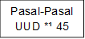
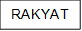

MATERI
STS PKN
Makna Pancasila sebagai dasar negara
(Sumber: Ajaran Ms. Amelia Apliani S.Sos.)
Kedudukan Pancasila sebagai dasar negara diperinci sebagai berikut:
1. Pancasila sebagai pasar negara merupakan segala hukum dari segala sumber hukum di Indonesia, Pancasila merupakan asas kerohanian dan tertib hukum indonesia yang termuat dalam pembukaan UUD *¹ NRI *² tahun 1945 dan di jelma-kan lebih lanjut dalam 4 pokok pembukaan UUD *¹ NRI *² tahun 1945.
2. Meliputi suasana kebatinan dari UUD *¹ NRI *² 1945.
3. Mewujudkan cita-cita hukum bagi hukum dasar negara
4. Mengandung norma yang mengharuskan UUD *¹ NRI *² 1945 memuat isi yang mewajibkan pemerintah dan penyelenggara negara
5. Merupakan sumber semangat bagi UUD *¹ 1945, penyelenggara negara, serta pelaksana pemerintah negara
Makna Pancasila sebagai pandangan hidup bangsa dapat di identifikasi-kan sebagai berikut:
1. Kerangka aman membentuk karakter.
2. Petunjuk dalam memecahkan permasalahan yang dihadapi bangsa.
3. Petunjuk arah bagi bangsa Indonesia dalam segala bidang kegiatan dan aktivitas hidup manusia.
4. Arahan bagi Warga Negara dalam melihat dan memanfaatkan potensi alam Indonesia.
5. Pedoman bagi Bangsa Indonesia dalam membangun diri sendiri dan menjalin hubungan dengan Bangsa lain.
Fungsi Pancasila dalam konteks Demokrasi
Sumber: https://fahum.umsu.ac.id/demokrasi-pancasila-pengertian-ciri-aspek-prinsip-dan-penerapannya/
Dalam konteks Demokrasi Pancasila, kedaulatan rakyat adalah prinsip utama yang dijunjung tinggi. Prinsip ini menegaskan bahwa kekuasaan politik berada di tangan rakyat, dan rakyat memiliki hak untuk memilih pemimpin mereka melalui proses pemilihan umum yang demokratis.
Berikut Ciri-Ciri Demokrasi Pancasila:
1. Dasar Nilai Pancasila (5 sila).
2. Kedaulatan Rakyat
3. Keberagaman dan Toleransi
4. Gotong Royong
5. Perlindungan Hak Asasi Manusia
6. Partisipasi Publik
7. Sistem Ketatanegaraan
Peran Pancasila dalam penyelesaian konflik sosial di Masyarakat
(Sumber: https://jptam.org/index.php/jptam/article/view/18467)
Pancasila memiliki peran yang signifikan dalam mengatasi konflik sosial di Indonesia dengan menyediakan landasan moral dan filosofis yang mempromosikan dialog, toleransi, dan keadilan.
Contoh penerapan Pancasila dalam bidang Ekonomi
(Sumber: BPIP, https://bpip.go.id/berita/pengamalan-dan-perwujudan-nilai-nilai-pancasila-di-bidang-ekonomi---)
Landasan operasional sistem ekonomi yang berdasarkan nilai-nilai Pancasila ditegaskan dalam UUD *¹ Negara Republik Indonesia Tahun 1945 Pasal 33, yang menyatakan beberapa hal berikut:
a. Perekonomian disusun sebagai usaha bersama berdasar atas asas kekeluargaan.
b. Cabang-cabang produksi yang penting bagi negara dan menguasai hajat hidup orang banyak, dikuasai oleh negara.
c. Bumi dan air dan kekayaan alam yang terkandung di dalamnya, dikuasai oleh negara dan dipergunakan untuk sebesar-besar kemakmuran rakyat.
d. Perekonomian nasional, diselenggarakan berdasar atas demokrasi ekonomi dengan prinsip kebersamaan, efisiensi berkeadilan, berkelanjutan, berwawawasan lingkungan, kemandirian, serta menjaga keseimbangan kemajuan dan kesatuan ekonomi nasional.
Berbagai wujud sistem ekonomi, baik yang sudah ada dalam masyarakat Indonesia maupun sebagai bentuk pengaruh asing, dapat dikembangkan selama sesuai dengan nilai-nilai Pancasila. Dalam masyarakat saat ini, sudah dikenal adanya bank, supermarket, mall, bursa saham, perusahaan, dan lain sebagainya. Semua lembaga perekonomian tersebut, dapat kita terima selama sesuai dengan nilai-nilai Pancasila. (MU/ER)
Penerapan Sila Pertama
[LOGIKA] – Pergi ke tempat ibadah secara rutin, hidup sesuai norma Agama yang dipercayai, dan melaksanakan kewajiban Agama lainnya.
Dampak positif dari penerapan nilai Pancasila di dalam bidang pendidikan
(Sumber: artikel https://kabarsumbawa.com/2022/12/07/penerapan-nilai-nilai-pancasila-dalam-lingkungan-pendidikan/ yang ditulis oleh Luna khaerunnsia (Mahasiswa PBSI FKIP UNSA) di Kabar Sumbawa)
Seperti sekarang di sekolah dan perguruan tinggi terdapat pelajaran pancasila dengan tujuan agar pelajar memiliki pemahaman dan pandangan yang baik terhadap pancasila juga diharapkan dapat menerapkan pancasila dalam kehidupan sehari-hari. Hal ini tentunya cara yang sangat baik untuk penanaman nilai pancasila dan tidak hanya untuk dalam lingkungan pendidikan saja tetapi juga pada kehidupan sehari-hari.
Dengan adanya hal ini juga dapat membangun karakter bagi pelajar. Adapun cara-cara juga metode yang bervariatif dari guru yang dapat membantu dalam penanaman nilai-nilai pancasila dalam lingkungan pendidikan.
1.Penanaman nilai pancasila dalam lingkungan sekolah dapat dimulai dari perilaku dan sikap manusia yaitu seperti pada pancasila sila pertama yaitu “ketuhanan yang maha esa.”
Contohnya:
• Tidak mengganggu teman yang berbeda agama dalam beribadah
• Menghargai adanya perbedaan agama Kepada sesama teman
• Tidak berbohong kepada guru maupun teman
2.Penanaman nilai Pancasila dalam lingkungan sekolah berdasarkan sila ke-2 “Kemanusiaan yang adil dan beradab.”
Contohnya:
• Membantu teman yang sedang Kesusahan
• Hormat dan patuh kepada guru/dosen
• Tidak membeda-bedakan dalam Memilih teman
3. Penanaman nilai Pancasila dalam Lingkungan sekolah berdasarkan sila ke-3 “Persatuan Indonesia.”
Contohnya:
• Mengikuti upacara dengan tertib
• Bergotong royong dalam membersihkan lingkungan sekolah
• Menghormati teman dengan segala perbedaan ras maupun budaya
4. Penanaman nilai Pancasila dalam Lingkungan sekolah berdasarkan sila ke- 4 “Kerakyatan yang dipimpin oleh kebijaksanaan dalam permusyawaratan perwakilan.”
Contohnya:
• Dalam pemilihan memberikan suara
• Membiasakan diri dalam Bermusyawarah dengan teman-teman saat menyelesaikan masalah
• Mengemukakan Pendapatnya
5. Penanaman nilai Pancasila dalam lingkungan sekolah berdasarkan sila ke-5 “Keadilan social bagi seluruh rakyat Indonesia.”
Contohnya:
• Tidak pilih-pilih dalam Berteman/berteman dengan siapa saja
• Seorang guru/dosen memperlakukan semua siswa sama rata
• Adil dalam berbagi kepada sesama teman
Hubungan antara Pancasila dengan UUD *¹
(Sumber: Pendidikan Pancasila untuk SMP/MTs yang ditulis oleh Kusmiatun, Yudi Suparyanto (Intan Pawira Edukasi, Anggota IKAPI nomor 107/DIY/2018) halaman 9.)
1.  Pancasila sebagai landasan
UUD *¹ NRI *² Tahun 1945
Pancasila sebagai landasan
UUD *¹ NRI *² Tahun 1945
 |
|||||
 |
|||||
Rekreasi Gambar 1.6 dari buku sumber, Piramida Pancasila cita cita hukum bangsa Indonesia.
2. UUD *¹ NRI *² Tahun 1945 sebagai Penjabaran Nilai-Nilai Pancasila
a. Pokok Pikiran Pertama Pokok pikiran pertama dari Pembukaan UUD *¹ NRI *² Tahun 1945. yaitu negara melindungi segenap bangsa Indonesia dan seluruh tumpah darah Indonesia dengan berdasarkan asas persatuan dengan mewujudkan keadilan sosial bagi seluruh rakyat Indonesia. Pokok pikiran pertama Pembukaan UUD *¹ NRI *² Tahun 1945 menggarisbawahi komitmen negara Indonesia dalam melindungi seluruh rakyat dan wilayah Indonesia dengan menjunjung tinggi persatuan dan keadilan sosial. Nilai persatuan yang terdapat dalam pokok pikiran ini mencerminkan nilai-nilai dari sila ketiga Pancasila, yang menekankan pentingnya persatuan sebagai landasan utama bagi kehidupan berbangsa dan bernegara. Dalam konteks ini, persatuan tidak hanya merujuk pada persatuan wilayah, tetapi juga persatuan dalam keberagaman dan menjadikan Indonesia sebagai rumah bagi semua warga dengan menjunjung tinggi keadilan sosial yang merata bagi seluruh lapisan masyarakat. Dengan demikian, pokok pikiran pertama dari Pembukaan UUD *¹ NRI *² Tahun 1945 sebagai implementasi konkret dari nilai persatuan yang terdapat dalam Pancasila yang menjadi fondasi bagi pembangunan negara Indonesia yang adil dan merata.
b. Pokok Pikiran Kedua Pokok pikiran kedua Pembukaan UUD *¹ NRI *² Tahun 1945, yaitu negara hendak mewujudkan keadilan sosial bagi seluruh rakyat Indonesia. Pokok pikiran kedua dari Pembukaan UUD *¹ NRI *² Tahun 1945 menekankan tekad negara Indonesia untuk mewujudkan keadilan sosial bagi seluruh rakyatnya. Nilai keadilan sosial yang tercermin dalam pokok pikiran ini merupakan penjabaran konkret dari sila kelima Pancasila yang menegaskan pentingnya keadilan sebagai prinsip yang mengatur hubungan antar warga negara.
c. Pokok Pikiran Ketiga Pokok pikiran ketiga Pembukaan UUD *¹ NRI *² Tahun 1945, yaitu negara yang berkedaulatan rakyat berdasarkan atas kerakyatan dan permusyawaratan/ perwakilan. Pokok pikiran ketiga Pembukaan UUD *¹ NRI *² Tahun 1945 menegaskan bahwa negara Indonesia adalah negara yang berdasarkan kedaulatan rakyat dengan sistem pemerintahan yang didasarkan pada prinsip kerakyatan dan proses permusyawaratan perwakilan. Nilai nilai yang terdapat dalam pokok pikiran ketiga Pembukaan UUD NRI Tahun 1945 merupakan penjabaran dari sila keempat Pancasila, yang menekankan pentingnya penyelenggaraan pemerintahan yang dipimpin oleh hikmat kebijaksanaan dalam proses musyawarah atau perwakilan rakyat
d. Pokok Pikiran Keempat Pokok pikiran keempat Pembukaan UUD NRI Tahun 1945, yaitu negara berdasarkan Ketuhanan Yang Maha Esa menurtut dasar kemanusiaan yang adil dan beradab. Pokok pikiran keempat dari Pembukaan UUD NRI Tahun 1945 menegaskan bahwa negara Indonesia berdasarkan pada Ketuhanan Yang Maha Esa dengan mengedepankan nilai-nilai kemanusiaan yang adil dan beradab. Nilai-nilai yang terdapat dalam pokok pikiran keempat merupakan penjabaran dari dua sila dalam Pancasila, yaitu sila pertama yang menekankan kepercayaan kepada Tuhan Yang Maha Esa dan sila kedua yang menegaskan kemanusiaan yang adil dan beradab. Ketuhanan Yang Maha Esa menjadi pijakan moral dan spiritual bagi negara Indonesia, yang mengakui keberadaan Tuhan sebagai sumber dari segalanya. Sementara itu, nilai kemanusiaan yang adil dan beradab menegaskan pentingnya penghormatan terhadap martabat dan hak asasi setiap individu, serta penegakan keadilan dalam hubungan antarmanusia.
Fungsi UUD *¹
(Sumber: https://ropeg.kkp.go.id/asset/source/2017/ujian_dinas/UUD_1945.pdf (Kementerian Kelautan dan Perikanan))
“Dalam hubungan ini, UUD 1945 juga mempunyai fungsi sebagai alat kontrol, dalam pengertian UUD 1945 mengontrol apakah norma hukum yang lebih rendah sesuai atau tidak dengan norma hukum yang lebih tinggi, dan pada akhirnya apakah norma- norma hukum tersebut bertentangan atau tidak dengan ketentuan UUD 1945.”
Pasal yang menekankan perlindungan HAM
(Sumber: https://jurnal.stkipkusumanegara.ac.id/index.php/citizenshipvirtues/article/download/902/542)
Kemudian konstitusi secara nasional pun telah menyebutkan dalam pasal 28I ayat (4) UUD 1945 menyatakan bahwa perlindungan, pemajuan, penegakan, dan pemenuhan hak asasi manusia adalah tanggung jawab negara, terutama pemerintah.
Dampak positif penerapan nilai Bhineka Tunggal Ika
Berikut ini merupakan beberapa dampak positif kebinekaan bagi bangsa Indonesia, yakni:
1. Menciptakan kerukunan dan perdamaian antar umat beragama.
2. Menghormati anggota keluarga yang lebih tua, seperti anak menghormati orang tua dan adik menghormati kakak.
3. Setiap siswa diperbolehkan untuk berdoa sesuai agama dan keyakinan masing-masing.
4. Menghargai anggota keluarga yang berbeda agama dan kepercayaan.
5. Enggak membeda-bedakan teman berdasarkan suku dan agamanya.
6. Membantu mengenal tradisi, adat istiadat, dan kebudayaan dari daerah lain.
7. Menumbuhkan sikap toleransi dalam berinteraksi di berbagai lingkungan.
Penerapan Pokok Pikiran UUD
[Acuan : Hubungan antara Pancasila dengan UUD *¹ ]
1. Melindungi segenap tumpah darah Indonesia merupakan salah satu dari beberapa tugas negara yang termaktub dalam Pembukaan Undang-Undang Dasar Negara Republik Indonesia Tahun 1945 (UUD NRI 1945). Frasa lengkapnya yaitu “Pemerintah Negara Indonesia yang melindungi segenap bangsa Indonesia dan seluruh tumpah darah Indonesia”. [Kementerian Keuangan RI, https://djpb.kemenkeu.go.id/portal/id/berita/lainnya/opini/3958-melindungi-segenap-tumpah-darah-indonesia-dalam-perspektif-apbn-sebuah-refleksi-77-tahun-indonesia-merdeka.html]
Contoh lain: Melindungi tempat kita, ikut menjadi Polisi.
2. Contoh lain: Pengadilan, Polisi, Undang Undang, Pidana, Hukum.
3. Contoh lain: ikut serta dalam pemilihan (sistem Demokrasi Indonesia), Menjadi anggota suatu Partai, menjadi representatif DPR, dan sebagainya.
4. Hukum HAM, Pergi ke tempat Ibadah. Memenuhi kewajiban agama kepada masyarakat.
Salah satu cara generasi muda untuk berkontribusi menjaga persatuan bangsa.
1. Saling menghormati satu sama lain dan tidak menyombongkan diri, agar dapat
2. Saling tolong menolong tanpa membeda-bedakan
3. Saling mengerti satu sama lain, terutama budaya masing-masing,